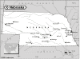

Nebraska

Attention: If you use this or any of the AIRS lists in any state, please report any bad phone numbers or emails to the webmaster. This is the responsibility of all users, including you. Thank you!
Benj. Clark
(eurippides@hotmail.com)
CROSSROADS: I-80
Lincoln York, 68506 68467
ONLY CALL IF EMERGENCY PHONE: 402/363-5922
BUSES AND YEARS:'64 beetle, 65 Double cab and soon a '65 Kombi
CLUBS BELONGED TO:The VW Club of Nebraska
COMMENTS:
It its Aug. thru May, I'm at a PRIVATE institution- read: no beer or co-ed
accomodations. I'm sure something could be figured out though.
AVAILABLE:
I'm pretty hard to reach, I travel for school a lot,
but I'm more than willing to help out however and whenever I can.
FAMILIAR WITH:1600
I CAN PROVIDE THE FOLLOWING SERVICES:
INTERNET ACCESS
TOOLS: Yes!, a dorm full!
TELEPHONE ACCESS
SPARE ROOM
MECHANICAL HELP
SPACE TO WORK ON BUS? Yes, well a big ol' dorm lot.
STORAGE SPACE? Yes a little
COFFEE/TALK
POSSIBLE TRANSPORTATION
Favorite beer type:Non alcoholic
Rob Laffoon
EMAIL: captoaster_at_cox_dot_net
CROSSROADS: I-80 & I-29
Omaha, 68104 PHONE: 402-558-1300
COMMENTS: Hi I had to change my email address from captoaster@home.com to captoaster@cox.net Could you change the
info for me. Thanks
AVAILABLE: evenings and sunday
I am familiar with: 1500, 1600, 1776+, dual carbs, type4 engine
I CAN PROVIDE THE FOLLOWING SERVICES:
INTERNET ACCESS
TOOLS
TELEPHONE ACCESS
TRANSPORTATION HELP
MECHANICAL HELP
SPACE TO WORK ON BUS
SOME PARTS
COFFEE/TALK
CAMPING: 2 nights
SPARE ROOM: 2 nights
Favorite beer type: Anything cold
Shelby Bell
EMAIL: vwcampin_at_lycos_dot_com
CROSSROADS: I-29 & I-80, 75
CITY: Omaha
ZIP CODE: 68104
PHONE: 402-554-9135
VW'S: 73 Riviera Camper 66 Panel Camper
COMMENTS: feel free to drop me a line if youre passin through or get
stranded....
AVAILABLE: : try my number anytime and leave message, im usually always
available evenings/weekends
I am familiar with: 1600, 1776+, type4 engine
I CAN PROVIDE THE FOLLOWING SERVICES:
INTERNET ACCESS
TOOLS
TELEPHONE ACCESS
TRANSPORTATION HELP
MECHANICAL HELP
SOME PARTS
COFFEE/TALK
CAMPING: 1 night
SPARE ROOM: none
Favorite beer type: Anything cold
Jess Kaylo
CROSSROADS: Huh?
Lincoln, 68502
PHONE: 402.435.2683
ONLY CALL IF EMERGENCY
VW'S: 1976 Kombi-Westy Bus
COMMENTS:
I am currently seeking a split camper or hard-top bus...so, you know, let me know if ya
know anything bout a lonely split in need of love. Oh yeah, I love road stories and
Hip-Kids=) So if your passing thru Nebraska,(which isn't that fun of a thing to do, but a
hard state to miss coast to coast)stop by! Peace, Jess
AVAILABLE: Hard to say...Weekends more than likely
familiar with: 1776+
I CAN PROVIDE THE FOLLOWING SERVICES:
INTERNET ACCESS
TOOLS
TELEPHONE ACCESS
TRANSPORTATION HELP
SPACE TO WORK ON BUS
STORAGE SPACE
COFFEE/TALK
SPARE ROOM
CAMPING SPOT
nights available: MOVE IN!!! :)
Favorite beer type: Micro brands
matt young
(u6t9@yahoo.com)
CROSSROADS: what???
broken bow, 68822
PHONE: 308-872-2871
VW'S: one 1978 bus and a super beattle
COMMENTS:
uhhh.... i'm only 16 but will do anything in my power to help someone,i've got a
apartment,and need help to customize my van.
if you know how i can lower it,put in a sun-roof,and put seets or benches in it PLEASE
e-mail me or something.also if you know where i can get the parts to do that stuff i would
be greatfull. peace out..matt
AVAILABLE: i'm only available in summer when-ever you want. stop by sometime
I CAN PROVIDE THE FOLLOWING SERVICES:
INTERNET ACCESS
TOOLS
TELEPHONE ACCESS
TRANSPORTATION HELP
MECHANICAL HELP
SPACE TO WORK ON BUS
STORAGE SPACE
PARTS AVAILABLE
COFFEE/TALK
SPARE ROOM: 4 nights or more
Favorite beer type: Non Alcoholic
Frank Musil
(aircooled@alltel.net)
CROSSROADS: I-80 & highway 77
Lincoln, 68507
PHONE: 402-465-5270
VW'S: 1957 sedan, 1958 sedan, 1965 sedan, 1968 convertible
COMMENTS: I operate a small aircooled VW repair shop and can provide assistance with most
repairs. We have an inventory of parts to draw from. Member of VW club of NE, VW club of
Omaha and have many contacts for repair needs. I am willing to offer mech. help,
discounted parts, a reasonable amount of mech. help is free, send a message I am willing
to lend a hand to any aircooled VW drivers.
AVAILABLE: when needed
familiar with: 36hp, 1200, 1300, 1500, 1600, 1776+, dual carbs
I CAN PROVIDE THE FOLLOWING SERVICES:
INTERNET ACCESS
TOOLS
TELEPHONE ACCESS
MECHANICAL HELP
SPACE TO WORK ON BUS
PARTS AVAILABLE
COFFEE/TALK
Favorite beer type: Anything cold
Kent Lenz
EMAIL: hippieangst_at_hotmail_dot_com
CROSSROADS: US 75, I-480, I-80, I-680, US 6
CITY: Omaha
ZIP CODE: 68132
PHONE: 402.212.5947
VW'S: '71 bus
COMMENTS: I owe a lot of folks out there, as I have had much help along my
travels. So drop me a line if you are going to be in the area...even if it
is just to say hello.
AVAILABLE: really just about anytime
I am familiar with: 1600
I CAN PROVIDE THE FOLLOWING SERVICES:
INTERNET ACCESS
TOOLS
TELEPHONE ACCESS
SPACE TO WORK ON BUS
SOME PARTS
COFFEE/TALK
CAMPING: none
SPARE ROOM: none
Favorite beer type: Micro brands
Michael Braunstein and Mary Keck
EMAIL: mikeb2687_at_aol_dot_com
CROSSROADS: I-80 & 72nd Street
Omaha, 68131
PHONE: 402-639-1403
VW'S: 1974 Sportsmobile
COMMENTS: Not a gearhead, but might help with a simple fix. Offstreet
(barely) parking for a night or two. Hot shower and kitchen.
AVAILABLE: happy to help in emergencies
I CAN PROVIDE THE FOLLOWING SERVICES
INTERNET ACCESS
TOOLS
TELEPHONE ACCESS
TRANSPORTATION HELP
MECHANICAL HELP
CAMPING: 2 nights
Favorite beer type: Anything cold
Keir
EMAIL: kschroeder_at_alpha-tech_dot_net
CROSSROADS: I-80/hwy 2
CITY: Lincoln
ZIP CODE: 68516
PHONE: 4023100019
VW'S: 81 vanagon aircooled
AVAILABLE: who knows when ever
I CAN PROVIDE THE FOLLOWING SERVICES
INTERNET ACCESS
TOOLS
TELEPHONE ACCESS
TRANSPORTATION HELP
MECHANICAL HELP
SPACE TO WORK ON BUS
COFFEE/TALK
CAMPING: none
SPARE ROOM: none
Favorite beer type: Bitter Sweet
Jon Simpson
EMAIL: dogfoodjones_at_cox_dot_net
CROSSROADS: I 80/ I 29
CITY: Omaha
ZIP CODE: 68108
PHONE: 402-932-5382
VW'S: 1968 Type 2
AVAILABLE: evenings/weekends
I am familiar with: 1600
I CAN PROVIDE THE FOLLOWING SERVICES
INTERNET ACCESS
TOOLS
TELEPHONE ACCESS
TRANSPORTATION HELP
SPACE TO WORK ON BUS
SPARE ROOM: 4 nights or more
Favorite beer type: Anything cold
Richard
EMAIL: vwvert68_at_cox_dot_net
CROSSROADS: I-80 and Giles Rd
CITY: Papillion
ZIP CODE: 68046
PHONE: 402-593-8546
ONLY CALL IF EMERGENCY
VW'S: 1967/68 Bugs
COMMENTS: Good working knowledge of VW Bugs more general knowledge on buses.
AVAILABLE: Available most the time
I am familiar with: Bastard40hp, 1500
I CAN PROVIDE THE FOLLOWING SERVICES
INTERNET ACCESS
TOOLS
TELEPHONE ACCESS
TRANSPORTATION HELP
MECHANICAL HELP
CAMPING: none
SPARE ROOM: 1 night
Favorite beer type: I don't drink
Robert
EMAIL: pomplemouse87_at_yahoo_dot_com
CITY: Omaha ZIP CODE: 68046
PHONE: 712-898-1297
COMMENTS: I am a Volkswagen Technician at a Volkswagen dealership
AVAILABLE: weekdays after 6:00 PM and weekends
I CAN PROVIDE THE FOLLOWING SERVICES
INTERNET ACCESS
TELEPHONE ACCESS
TRANSPORTATION HELP
MECHANICAL HELP
COFFEE/TALK
CAMPING: none
SPARE ROOM: none
Favorite beer type: Commercial brands
Karl
EMAIL: Karl_at_Kenoyer_dot_com
CROSSROADS: highway 75 , Capehart road
CITY: Bellevue ZIP CODE: 68123
PHONE: 402-517-2615
VW'S: 1965 Standard Microbus
COMMENTS: I can work on all types of Aircooled VWs,
I have kids so late night visits will be tolerated just not recommended
I have a few tools , what I don't have we can get no problems
I am friendly :)
I can feed you if you are hungry but don't expect alcohol sorry I don't drink.
you can sleep in the house if you are cold but you have to share the sofa bed
with the dog , heh
Wireless internet access
Pets are welcome
IF YOU COME LATE AT NIGHT BRING CAFFEINE!
AVAILABLE: anytime everyday, only call if it is an emergency at night, otherwise
you can call all day long
I am familiar with: 1200/1300, 1500/1600, 1776+, dual carbs
I CAN PROVIDE THE FOLLOWING SERVICES
INTERNET ACCESS
TOOLS
TELEPHONE ACCESS
TRANSPORTATION HELP
MECHANICAL HELP
SPACE TO WORK ON BUS
STORAGE SPACE
SOME PARTS/CAN GET THEM
COFFEE/TALK
CAMPING: 4 nights or more
SPARE ROOM: CALL ME/IT DEPENDS
Favorite beer type: I don't drink
justin
EMAIL: joosty_chin_at_yahoo_dot_com
CROSSROADS: hwy133 & I680
CITY: omaha, 68142
ONLY CALL IF EMERGENCY PHONE: 4022121371
VW'S: 2 1973 things
COMMENTS: have books and manuls, tools, can do minor 1600 work
AVAILABLE: its a toss up
I am familiar with: 1500/1600
I CAN PROVIDE THE FOLLOWING SERVICES
INTERNET ACCESS
TOOLS
TELEPHONE ACCESS
TRANSPORTATION HELP
SOME PARTS/CAN GET THEM
CAMPING: 4 nights or more SPARE ROOM: CALL ME/IT DEPENDS
Favorite beer type: Room temp will do.
{kind=link}